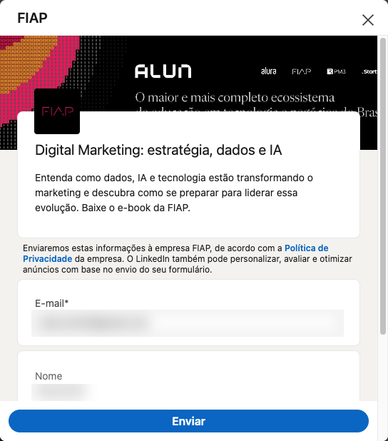

Entender os gargalos e organizar estratégias, captação, automações e comunicação, com método e evidência.
A operação não pode parar enquanto a nova gestão de Marketing assume e a vaga de performance e growth é preenchida. O time precisa de método, rituais e histórico de cada unidade.
GRADUAÇÃO com 2.220 vagas no edital (675 diurno e 1.545 noturno).
Pelo histórico da FECAP, o Marketing tende a focar na GRADUAÇÃO e deixa as demais unidades de negócio em segundo plano.
cursos e processos "Em breve", sem formulário de interesse
Levantamento LORSO · 22/10/2026 · site e anúncios públicosO lead que chegou ao site foge para o concorrente.
Quem está travando? Onde está o gargalo?
Fora da janela de inscrição, a demanda que chega o ano todo (orgânica, indicação, mídia, eventos) não é registrada. Cada turma começa a captar do zero e depende só de mídia comprada na hora.
A captação deve acontecer 365 dias do ano, com canais de atendimento e nutrição do lead funcionando o tempo todo. Hoje, o interessado não encontra com quem falar. Onde está o nosso comercial?
Único curso com página própria, anúncio coerente e captação contínua. Com a saída da parceria, o caso é estudado para dar continuidade sem perda de captação: manter o fluxo e os resultados, com o P&L como referência.
CURSOS · PÓS 2026.2
EM BREVECURSO · PÓS 2027.1
Inscrições abertas em 14/04. Edital assinado em 24/04 e 13/05.
Site com edital antigo. Por qual motivo?
Onde está o edital? Onde está a lista de interesse?
Sem datas, sem plano.
O crescimento da GRADUAÇÃO depende de abrir e lotar mais turmas no período da manhã, curso a curso, sem depender só da noite.
Vagas oferecidas no edital da GRADUAÇÃO 2027.1, 2.220 no total. Cada turma nova de manhã precisa de demanda comprovada antes de abrir.
Ações atuais da FECAP para a manhã, levantadas na entrevista com a Reitoria.
Antes de propor mudanças, todas as áreas precisam falar dos mesmos números.
Extensão e curta duração são a porta de entrada mid ticket para o upsell das demais unidades.
Curta duração e educação executiva sem estratégia própria de captação.
"Captado", "lead" e "verba" ainda não têm o mesmo significado para Marketing, central e financeiro.
Como as demandas chegam ao Marketing, quem aprova e onde o fluxo trava.
Entrevista 1 a 1 e o caminho de uma demanda real, do pedido à entrega.
Convênios, empresas parceiras e times externos, e também UGC creators, formadores de opinião e influenciadores de destaque no Meta Business, captando via programa de afiliados.
Convênios e afiliados cruzados com os leads e matrículas de origem parceira no CRM.
CRM, contas de anúncio, site e ferramentas: o que se usa, o que integra e o que se paga sem usar.
Inventário de acessos e contratos: uso, integração e custo mensal.
Agências e fornecedores: escopo, custo e entrega de cada um.
Contrato e escopo de cada um, comparados às entregas dos últimos 6 meses.
Equipe, papéis, a nova gestão, a vaga de performance e growth e o tempo entre tarefas administrativas e unidades.
Entrevista com cada pessoa e registro do tempo por tipo de tarefa durante 2 semanas.
Anual por unidade, realizado até o mês e divisão entre mídia, produção, eventos e equipe.
Orçado × realizado por unidade, com o financeiro.
Receita, custos, CPL, CAC e margem: o modelo se paga e pode ser replicado?
Matrículas pagas no CRM menos mídia, time externo e plataforma.
Do lead à matrícula paga no CRM, por unidade, curso, origem, call center e comercial.
Exportação do CRM conciliada com as contas de mídia.
Anos de planejamento, estudo e aplicação prática em operações de educação e de finanças. O que vai para a FECAP não é teoria: é o que já rodou, com time, verba e meta.
anos liderando unidades de negócio em EdTech, Fintech e E-commerce
em receita gerada com marketing, marca e go-to-market
Vivência de quem já passou pela FECAP e por todo o processo.
Cocriação (matriz curricular, definição de creators, discovery, precificação e metas) de MBA certificado pelo MEC focado em transformar empreendedoras em CEOs.
Gestão de marketing em referência nacional de educação financeira.
Produtos educacionais, lançamentos perpétuos, ofertas de alto ticket e gestão operacional de ponta a ponta.
Head de Marketing: aquisição paga, conteúdo B2B e B2C e integração do marketing com o comercial.
Marca, RP, LinkedIn, redes sociais e vídeo com uma voz só.
Meta Ads, Google Ads e LPs que transformam clique em lead.
IA no conteúdo, no diagnóstico e na otimização das campanhas.
CRM, WhatsApp e réguas de e-mail levando o lead até a venda.
Varejo, atacado e e-commerce com canais organizados e DRE.
Diagnóstico, dashboards, avaliação de reports e metas.
Go-to-market, ofertas e plataforma de lançamentos.
Sistemas e apps próprios construídos do zero.
A operação não perde por falta de esforço. Perde nas passagens entre uma etapa e outra.
Cada briefing de unidade de negócio vira conversa, não ticket.
HojeA mídia leva a páginas paradas e o lead some.
Com a LORSOCaptura, nutrição e conversão 365 dias, sem esperar janela.
HojePedidos por vários caminhos, briefing vago, tudo urgente.
Com a LORSOBriefing 1:1, fluxo único e prazo que todos enxergam.
HojeMarketing gera, comercial não vê, ninguém mede o contato.
Com a LORSOLead quente no CRM, régua de WhatsApp e tempo de resposta medido.
HojeCada área com sua planilha e sua versão da verdade.
Com a LORSOMídia, CRM e DRE no mesmo painel, com fonte e data.
Sem apego ao que já foi feito: CRM, WhatsApp API, ManyChat, IA e painéis em tempo real. Mantemos o que funciona e trocamos o que trava.
Cursos, preços, vagas e capacidade por turno de cada unidade.
Dores, metas, DRE, autonomia e foco de cada unidade.
Jornada 1 a 1 pelas áreas e unidades, registrada por cargo.
Nota N1–N4, incongruências entre o que se diz e o que os dados mostram, e causas raiz.
A ordem e a intensidade de cada fase seguem o calendário de captação de cada unidade de negócio.
Maturidade do Marketing, fluxo com as unidades, time, orçamento e gargalos da captação, com entrevistas uma a uma.
Plano da transição e da captação: novo fluxo, estrutura do time e verba por unidade, canal e curso.
Implantação com a nova gestão: fluxo, rituais, automações e ajustes de campanha.
Criativos, segmentações e conversão revisados em ciclos curtos, com cada decisão registrada.
Indicadores à vista da Reitoria e passagem completa das atividades para a nova gestão.
Cada coordenação acompanha o próprio curso, do lead à matrícula paga, sem pedir relatório ao Marketing. Os números vêm do CRM da FECAP.
Manhã e noite separadas: quanto falta para fechar cada turma.
ENEM, vestibular, mídia, orgânico e parcerias, com CPL e CAC.
Tempo até o primeiro contato e conversão por etapa.
Captação diária comparada à meta e ao ciclo anterior.
Os modelos marcados montam o checklist do curso. Depois vêm painel, cronograma por área com responsável e prazo, tarefas, ofertas, KPIs e economia da turma.
Curta duração (15 h a 120 h), com turma e período de inscrições.
Janela de inscrições com aquecimento: aulas abertas, lives e grupos de WhatsApp.
Oferta premium vendida de forma consultiva: aplicação e conversa com o comercial.
Venda antes de o curso estar 100% pronto, para validar a oferta e formar a turma fundadora.
Jornada automatizada por interessado, com prazo individual.
Venda contínua, sem janela, com mídia sempre ativa.
| Fase do método | Fundamento |
|---|---|
| Maturidade N1–N4: processos, pessoas, ferramentas e cultura | Capability Maturity Model · Paulk et al., SEI/Carnegie Mellon (1993) |
| Gargalos e prioridade | Teoria das Restrições · Goldratt, A Meta (1984): a operação anda no ritmo do gargalo |
| Causa raiz | Diagrama de Ishikawa e 5 Porquês · Sistema Toyota de Produção |
| Comprovado × declarado | Gestão baseada em evidências · Pfeffer & Sutton, Harvard Business Review (2006) |
| Execução e otimização em ciclos | PDCA · Shewhart e Deming |
| Transição da gestão | 8 passos da mudança · Kotter, Harvard Business Review (1995) |
| Velocidade da central e do comercial | The Short Life of Online Sales Leads · Oldroyd, McElheran e Elkington, HBR (2011) |
| Captação 365 dias | Regra 95:5 · Dawes, Ehrenberg-Bass (2021) · The Long and the Short of It · Binet e Field, IPA (2013) |
| Indicadores para a Reitoria | Balanced Scorecard · Kaplan e Norton, Harvard Business Review (1992) |
| Treinamento da nova gestão | 4 níveis de avaliação · Kirkpatrick |
Atuo lado a lado com o time de Marketing, sem ocupar cargo: oriento, treino e acompanho. Contratações, desligamentos, orçamento e mudanças de rota passam pela Reitoria e são executados pela equipe administrativa da FECAP.
Dailys e weeklys no formato que cada momento pedir.
Evolução, gargalos e recomendações direto à Reitoria.
Plataforma LORSO com leitura integral para a Reitoria.
Processos documentados para o time seguir sozinho.
Caso necessário, a LORSO conta com parceiros externos prontos para atuar na dor da FECAP.
A LORSO indica e a FECAP contrata direto, sem intermediação.
Imprensa, reputação e pauta institucional da FECAP.
Mídia paga por curso, testes e otimização diária das campanhas.
Integrações de CRM, páginas e automações, quando necessário.
Facilitadora, com PÓS-GRADUAÇÃO pela Gestão Barragan. Apoio externo ao atendimento.
O objetivo é que, em abril, a nova gestão e a pessoa de performance e growth conduzam a operação com autonomia, e cada pessoa do time esteja no papel certo.
Repasse do histórico de cada unidade, mentoria em planejamento, orçamento e campanhas, e acompanhamento nas primeiras decisões.
Perfil da vaga, apoio na seleção e treinamento de quem entrar em mídia, funil e testes.
Plano de desenvolvimento por pessoa, a partir das entrevistas do diagnóstico.
Quem faz o quê e lacunas de competência, com recomendação à Reitoria.
Como o seu call center trabalha hoje? Como é a abordagem ativa da base? Mensageria e cadência de e-mails travam a operação?
Fora do limite de marketing por pessoa. Com conteúdo promocional, a Meta reclassifica como marketing.
Listas segmentadas. A Meta aplica um limite dinâmico por pessoa: acima dele a mensagem não é entregue.
Consentimento conforme a LGPD em toda entrada.
Custo sob controle: desde 01/07/2025 a Meta cobra por mensagem entregue e, desde 01/10/2026, cobra também utilidade dentro da janela de 24 h e atendimento acima de 1.000 mensagens por mês. Cobrança em reais obrigatória até 30/06/2027.
Campanhas por modalidade e frente de estudo. Não se sabe quanto custa e quanto retorna cada curso.
Cada curso com verba, CPL, CAC e retorno próprios, como já fazemos por campanha no ENEM e no vestibular.
A viabilidade da verba para verticalizar é validada a partir do diagnóstico. Para isso precisamos do CPL e do CAC reais por curso, e hoje não sabemos se há visibilidade desses números.
A pessoa folheia a prévia de um e-book no feed e, para ver o material completo, deixa o contato num formulário já preenchido com os dados do perfil. O lead é captado sem edital aberto.

Hoje, as demandas das unidades e das coordenações chegam por vários caminhos. A proposta é um fluxo único, com prazo e responsável.
Cada demanda e cada hora do time classificadas pelo que entregam à FECAP.
Da coordenação ao Marketing, com entrada única, responsável e etapa visível.
Tempo de resposta por tipo de demanda, acompanhado todo mês.
Horas em tarefas administrativas contra horas dedicadas às unidades.
Cada processo revisado vira documento para o time seguir sozinho.
Cada conversa é registrada na Central no mesmo dia. A PÓS vem na sequência, porque a equipe administrativa e os projetos em andamento ainda estão em curso.
Reitoria, pró-reitorias e gestão de Marketing. Pedido dos acessos e das exportações.
Cada pessoa, uma a uma. Central de atendimento e comercial.
Coordenações dos cursos de GRADUAÇÃO.
Parceiros e fornecedores. Diagnóstico consolidado na Central.
Coordenações da PÓS, agrupadas por área, quando a operação atual estiver encaminhada.
Entrevistas uma a uma, com o roteiro enviado antes. O diagnóstico da GRADUAÇÃO e do Marketing vai à Reitoria primeiro, e a PÓS entra na sequência. Condição: agenda das entrevistas reservada pela FECAP logo no início.
Do diagnóstico ao PDI de cada pessoa, sem esperar relatório. Metas combinadas com a Reitoria no início e cada número com fonte e data.
Nota N1–N4 por área e unidade
Em que fase está cada frente
O que trava, por prioridade
Plano de desenvolvimento por pessoa
Funil e meta por curso e turno
Orçado × realizado por unidade
Cada ação com dono e prazo
Captação, administrativo, recursos e demandas desnecessárias
A Fase 01 deixa método, números e time rodando. A Fase 02 parte do que os resultados mostraram e deixa a próxima captação encaminhada.
O que trouxe resultado na GRADUAÇÃO e na PÓS vira rotina do time, com dono e indicador.
Campanhas, réguas, fluxo de demandas e verba ajustados com o que os ciclos ensinaram.
O método levado às próximas unidades de negócio, começando por Colégio e curta duração.
Captação ativa, sem parada na virada de intake: o lead entra, o Marketing nutre e converte.
Agora é hora de colocar o plano em ação. Vamos iniciar?